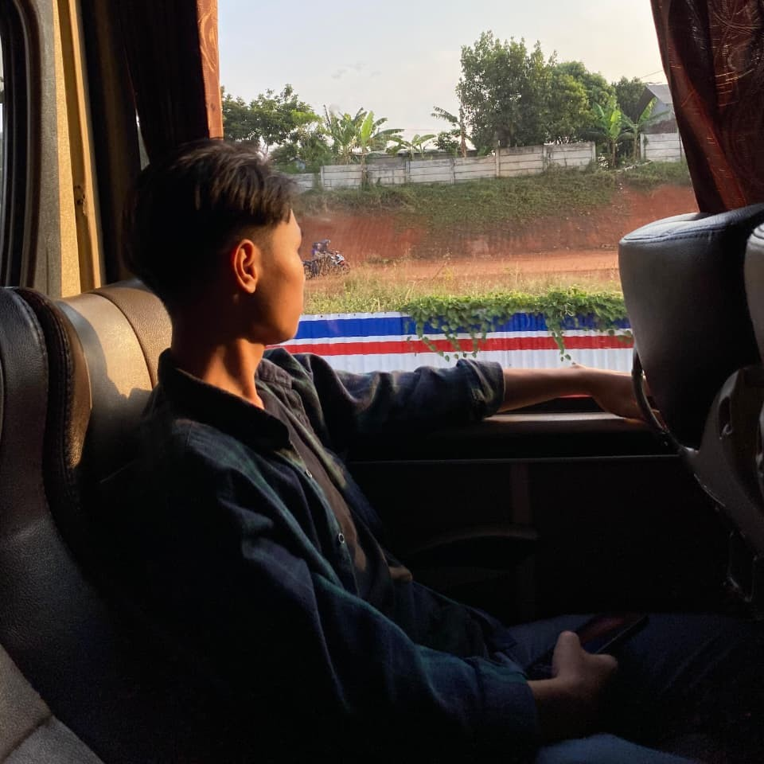

👋 Halo, perkenalkan saya
Siswa TJKT · SMKN 13 Bandung · Bandung, Indonesia

"Saya percaya bahwa belajar hari ini adalah investasi masa depan."
Kenali saya lebih dalam — siapa saya dan apa yang saya kejar.
Halo! Nama saya Ditya Satrya Rochman, seorang pelajar aktif kelas 11 di SMKN 13 Bandung jurusan Teknik Jaringan Komputer dan Telekomunikasi (TJKT).
Saya memiliki minat yang besar di bidang komputer, jaringan, teknologi, dan pengembangan diri. Setiap hari saya berusaha memperluas pengetahuan — dari konfigurasi jaringan, simulasi topologi, hingga dasar pemrograman web.
Saya percaya bahwa ilmu yang dipelajari sekarang adalah pondasi untuk karir profesional di masa depan. Semangat belajar dan rasa ingin tahu tinggi adalah kekuatan terbesar saya.
Hasil praktik, proyek, dan pencapaian selama belajar di SMKN 13 Bandung.
Konfigurasi IP address, subnet mask, dan default gateway pada perangkat jaringan di lingkungan lab.
Praktik static routing, dynamic routing (RIP), dan perhitungan subnetting dengan metode VLSM.
Simulasi topologi jaringan (star, mesh, ring) menggunakan Cisco Packet Tracer dengan konfigurasi lengkap.
Merakit PC dari nol — memasang motherboard, RAM, CPU, power supply, dan storage secara tepat.
Instalasi Windows 10/11 dan Linux Ubuntu dari awal, termasuk partisi disk dan konfigurasi dasar.
Pembuatan halaman web menggunakan HTML & CSS dasar — tampilan profil dan landing page sederhana.
Kumpulan sertifikat pelatihan, workshop IT, dan pencapaian akademik selama di SMKN 13 Bandung.
Skill yang sedang saya kembangkan sebagai calon profesional IT.
Punya pertanyaan, kolaborasi, atau sekadar ingin berkenalan? Jangan ragu untuk menghubungi saya!
Saya terbuka untuk diskusi, kolaborasi, atau sekadar berbagi informasi seputar IT dan teknologi.